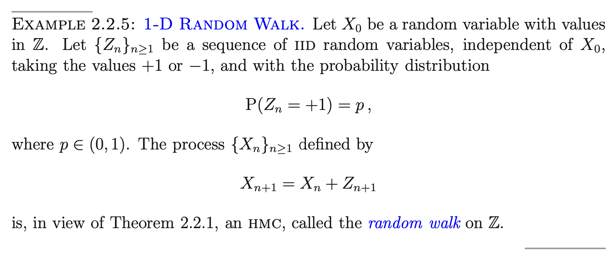

Nature
- 마코프체인의 상태는 (1) positive recurrent (2) null recurrent (3) transient 로 나눌 수 있다.
- 가짜정의: HMC \(\{X_t\}\)의 어떠한 상태 \(i\)가 transient 하다는 의미는 그 상태에 일시적으로 머문다는 의미이다.
ChatGPT: “transient”는 한국어로 “일시적인” 또는 “잠깐의”라고 번역할 수 있습니다. 이 단어는 어떤 상태, 현상 또는 조건이 일시적이거나 잠시동안만 지속되는 것을 의미합니다.
\(\sum_{t=0}^{\infty}p_{ii}^{(t)}<\infty\)
- 1D random walk
- \(X_0=0\)
- \(p_{i,i+1}=p\) and \(p_{i,i-1}=1-p\)
\(p_{00}^{(2t+1)}=0\)
array([[0],
[0],
[0],
...,
[0],
[0],
[0]])array([[0. , 0.5, 0. , ..., 0. , 0. , 0. ],
[0.5, 0. , 0.5, ..., 0. , 0. , 0. ],
[0. , 0.5, 0. , ..., 0. , 0. , 0. ],
...,
[0. , 0. , 0. , ..., 0. , 0.5, 0. ],
[0. , 0. , 0. , ..., 0.5, 0. , 0.5],
[0. , 0. , 0. , ..., 0. , 0.5, 0. ]])array([[0.0546875, 0. , 0.109375 , ..., 0. , 0. ,
0. ],
[0. , 0.1640625, 0. , ..., 0. , 0. ,
0. ],
[0.109375 , 0. , 0.2421875, ..., 0. , 0. ,
0. ],
...,
[0. , 0. , 0. , ..., 0.2421875, 0. ,
0.109375 ],
[0. , 0. , 0. , ..., 0. , 0.1640625,
0. ],
[0. , 0. , 0. , ..., 0.109375 , 0. ,
0.0546875]])RuntimeWarning: divide by zero encountered in scalar divide
(4*p*(1-p))**T/np.sqrt(np.pi*T)infarray([[0.04101562, 0. , 0.08789062, ..., 0. , 0. ,
0. ],
[0. , 0.12890625, 0. , ..., 0. , 0. ,
0. ],
[0.08789062, 0. , 0.20214844, ..., 0. , 0. ,
0. ],
...,
[0. , 0. , 0. , ..., 0.20214844, 0. ,
0.08789062],
[0. , 0. , 0. , ..., 0. , 0.12890625,
0. ],
[0. , 0. , 0. , ..., 0.08789062, 0. ,
0.04101562]])

\(N(i) = \sum_{t=0}^{\infty}1(X_t=i)= {\sf sum}({\bf X} == i)\)
Period
마코프체인 이론들
- 정의: PRC, AP인 상태를 에르고딕 상태라고 부른다. [@이외숙2008확률과정론(p63)]
- 정의: IRR, PRC, AP인 마코프체인을 에르고딕 마코프체인이라고 부른다. [@이외숙2008확률과정론(p69)]
- 이론: 극한분포가 수렴하고 동일한 row \({\bf p}_{\star}^\top\)를 가지는 경우는 \({\bf p}_{\star}^\top {\bf 1} =0\) 이거나 \({\bf p}_{\star}^\top {\bf 1} =1\) 인 경우이다. 여기에서 \({\bf p}_{\star}^\top {\bf 1} =0\)인 경우라면 정상분포 \({\boldsymbol \pi}\)가 존재하지 않는다. 만약에 \({\bf p}_{\star}^\top {\bf 1}=1\) 인 경우라면 정상분포 \({\boldsymbol \pi}\)가 존재하고 \({\bf p}_{\star}^\top ={\boldsymbol \pi}^\top\)라고 쓸 수 있다.1 [@이외숙2008확률과정론(p69)]
- 이론: IRR, AP 이면 \({\bf P}\)가 수렴하고 동일한 row를 가진다. [@이외숙2008확률과정론(p69)]
- 이론: IRR, AP 이면 다음의 두 가지 중 하나가 성립한다.
- PRC인 마코프체인이 아니다: 모든상태가 transient 하거나 null recurrent 하다.
- PRC인 마코프체인이다: 모든상태가 positive recurrent 하다.
1의 경우라면 \(\sum_{i \in E}\pi_i=0\) 이 되어서 정상분포가 존재하지 않는다. 2의 경우라면 유일한 정상분포를 가진다. [@이외숙2008확률과정론(p69)]
만약에 상태공간이 유한인 상황이라면 항상 IRR, AP인 경우는 항상 PRC이다.
- 이론: IRR, AP, PRC \(\Rightarrow\) (1) \(\exists! {\boldsymbol \pi}\) (2) \({\boldsymbol \pi}^\top={\bf p}_{\star}^\top\) [@이외숙2008확률과정론(p69)]
- 이론: IRR, AP, \(\exists! {\boldsymbol \pi}\) \(\Rightarrow\) (1) PRC (2) \({\boldsymbol \pi}^\top = {\bf p}_{\star}^\top\) [@이외숙2008확률과정론(p69),@durrett2012essentials(Thm1.19)]
- [@durrett2012essentials(Thm1.19)] 에서는 PRC임은 빠져있긴함.
- 이론: IRR, RC \(\Rightarrow\) \(\exists \tilde{\boldsymbol \pi}\) [@durrett2012essentials(Thm1.19)]
- 이론: IRR, \(\exists {\boldsymbol \pi}\) \(\Rightarrow\) \(\exists! {\boldsymbol \pi}\)
- 이론: IRR, \(\exists {\boldsymbol \pi}\) \(\Rightarrow\)
\[\lim_{T\to \infty} \frac{1}{T}\sum_{t=0}^{T-1}f(X_t) = \mathbb{E}_{\boldsymbol \pi}[f(X_0)]:=\sum_{x}f(x)\pi(x)\]
| CaseNO | 대표예제 | FIN | IRR | AP | Nature | \(\exists {\boldsymbol \pi}^\top\) | \(\exists! {\boldsymbol \pi}^\top\) | \(\exists! {\bf p}_{\star}^\top\) | Ergodic THM | Ergodic HMC |
|---|---|---|---|---|---|---|---|---|---|---|
| 1 | X | O | X | T | X | X | X | X | X | |
| 2 | X | O | X | NR | X | X | X | X | X | |
| 3 | X | O | X | PR | O | O | X | X | X | |
| 4 | X | O | O | T | X | X | O | X | X | |
| 5 | X | O | O | NR | X | X | O | X | X | |
| 6 | X | O | O | PR | O | O | O | O | O |
- IRR, AP, \(\exists {\boldsymbol \pi}\) \(\Rightarrow\) \(p^n(x,y) \to \pi(y)\) [@durrett2012essentials, Thm, @bremaud2020markov]
- IRR, RC \(\Rightarrow\) \(\frac{N_n(y)}{n} \to \frac{1}{E_yT_y}\)
- IRR, \(\exists {\boldsymbol \pi}\), \(\sum_x|f(x)|\pi(x)<\infty\) \(\Rightarrow\) \(\frac{1}{n}\sum_{m=1}^{n}f(X_m) \to \sum_xf(x)\pi(x)\)
- IRR, FINITE \(\Rightarrow\) 정상분포가 존재하고 유일하다.
Footnotes
따라서 정상분포는 유일하게 존재한다.↩︎